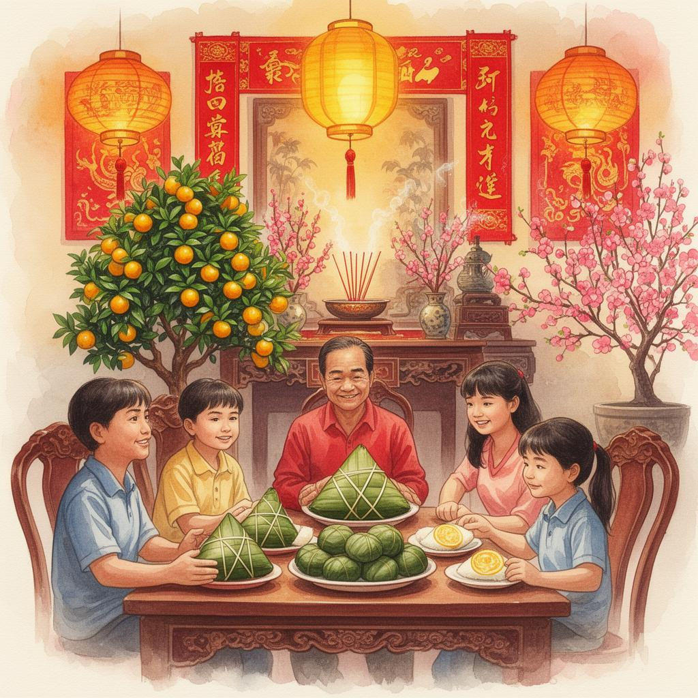

Tết Nguyên Đán

Không khí sum vầy ngày Tết cổ truyền
Nguồn gốc
Tết Nguyên Đán, hay Tết Ta, là điểm giao thời thiêng liêng nhất trong tâm thức người Việt. Các nghiên cứu văn hóa và truyền thuyết "Bánh chưng bánh giầy" đã chứng minh người Việt cổ đã tổ chức ăn Tết từ thời các vua Hùng, trước cả thời kỳ Bắc thuộc. Chữ "Tết" vốn là biến âm của "Tiết" (thời điểm), còn "Nguyên Đán" mang nghĩa buổi sáng đầu tiên của một kỷ nguyên mới.
Hoạt động
Các hoạt động chính gồm: gói bánh chưng, bánh tét; tảo mộ và cúng ông bà tổ tiên; xông đất đầu năm; chúc Tết và lì xì; trang trí mai – đào – quất; mặc áo dài truyền thống; và sum họp gia đình bên mâm cỗ ngày Tết.